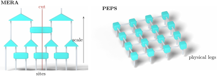

Advanced Quantum Materials 2027 · All lectures · Lecture notes
Session 7. Quantum Many-Body Entanglement and Tensor Networks
7.11 MERA and PEPS beyond MPS
Matrix product states are the simplest member of a much larger family, which is called tensor networks. Nothing requires the tensors to sit in a 1D chain, and the same coefficient tensor \(C\) of (7.4) can also be drawn as a 2D grid or as a general graph of connections. A richer connectivity makes the optimization harder, and MPS are the tensor network that is easiest to optimize, but in exchange it can represent a larger class of states. Let us mention two of these architectures.
The multi-scale entanglement renormalization ansatz (MERA) organizes its tensors in a hierarchy of length scales instead of along a single chain. This extra structure allows it to describe more entanglement than an MPS with a comparable number of parameters. This is important because the area law (7.9) is strictly a statement about gapped systems. At a critical point, which is a continuous quantum phase transition usually described by a conformal field theory in 1+1 dimensions, the entanglement entropy of the ground state does not saturate anymore. Instead, it grows logarithmically with the size of the subsystem,
\[S(\ell) \;=\; \frac{c}{3}\log \ell \;+\; \text{const.}, \tag{7.12}\]
where \(c\) is the central charge of the CFT. This is a weak but real violation of the strict area law (7.9), and the extra hierarchical structure of MERA is built to describe this kind of weak violation. For this reason MERA is the tensor network that is used at criticality.
Projected entangled pair states (PEPS) are the direct 2D generalization of the MPS idea. Instead of tensors coupled in a line, the tensors sit on the nodes of a real 2D lattice, and they are coupled to all their lattice neighbors. This is a natural and promising architecture for 2D quantum many-body problems, but it has a real cost. For PEPS there is no analogue of the simple local eigenvalue problem for a single tensor that we have in DMRG, because the contraction of a general 2D tensor network is itself a hard computational problem. This is different from the 1D contraction, which is what made the local eigenvalue problem of Section 7.10 possible to solve. The optimization of PEPS is still an open and harder problem. Figure 7.6 shows both architectures, where the extra structure of each one comes from and what it costs.

This is also where the lecture of this year ends. In contrast with some previous editions of this course, the recording of this year stops after MERA and PEPS, and it does not continue with neural network quantum states. The single mention in Section 7.3 is all that we say about this topic in this session. The tensor-network methods built in Sections 7.4 to 7.11 are still important, since in session 10 we will use the same MPS, MERA and PEPS architectures directly as machine-learning classifiers, and we will come back to neural network quantum states in detail, from the point of view of machine learning.
Notebook check-in: session7.ipynb, “The entanglement entropy as a signal for phase transitions” (Challenge)
In this exercise you follow the entanglement entropy of the ground state of the transverse-field Ising chain while you change the transverse field across its quantum critical point, using the MPS methods of dmrgpy. Away from criticality you should see the area-law saturation of Section 7.8. Close to the transition, you should see that the entropy does not saturate, as predicted by (7.12). The quiz also asks which regime is the hardest for MPS, and this question asks you to connect back to the reason why MERA exists.